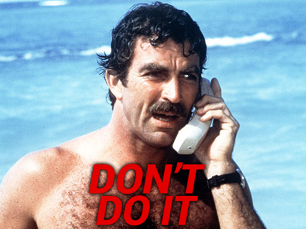
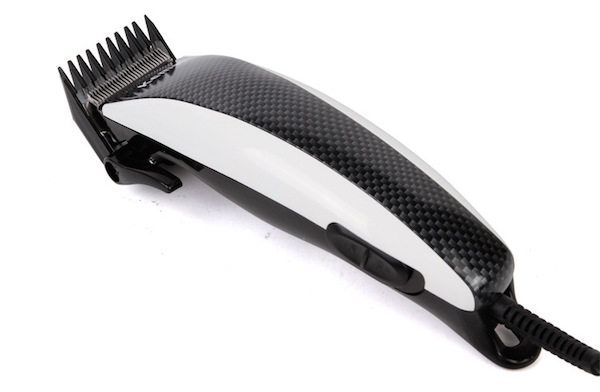

Growing up I didn't see any shaved chests, let alone arms, walking on the beach. Every man was rocking what Mother Nature gave him and the women didn’t seem bothered by bushes hanging on some of our father’s pectorals.
As years past by and the 80s and 90s eras got to an end, more and more guys started paying attention to their body hair, from their backs, to their chests and all they way down to the legs. You could see a new wave of young men using shaving machines on their bodies or even going further and stepping into beauty parlors for a painful wax.
At first not many people accepted it, calling this practice less manly and more of a woman’s thing, even going as far as claiming that a man who shaves his chest is not interested in women.
Nothing more further than the truth. Have you shaved any of your body parts, besides the face (and maybe your head)? There’s a true feeling of freshness and cleanliness after all the hair comes off, not to mention you sweat a lot less, especially in the hot season. Haters are going to hate no matter what and there will always be someone to critique this action, but who really cares as long as it makes you feel good?
Which brings me to one body part I haven’t tried shaving yet: the arms! Why? I really don’t have a straight answer. Could be that my arms’ hair is not that prominent, could be I’m afraid it wouldn’t look aesthetic or maybe I just consider it to be the only manly hair on my body, that last drop which gives an extra boost in her eyes, making her forget about the long gone legs and chest hair.
The truth is, of all my friends who shave their arms, there is not one single arm out there I can say it looks nice without hair. Sure, the first 2-3 days, when the skin is fresh, it may not bother, but after a few days, when those little, spiky hairs make their appearance, something feels like is not right.
I could be wrong, I could be right, but in the end is a matter of own preference, each individual making feel-good choices for him. The truth is, no matter what you do, the places you shave (or not), some voices will still make rude comments in the background. Be wise, don’t listen to them and do you!